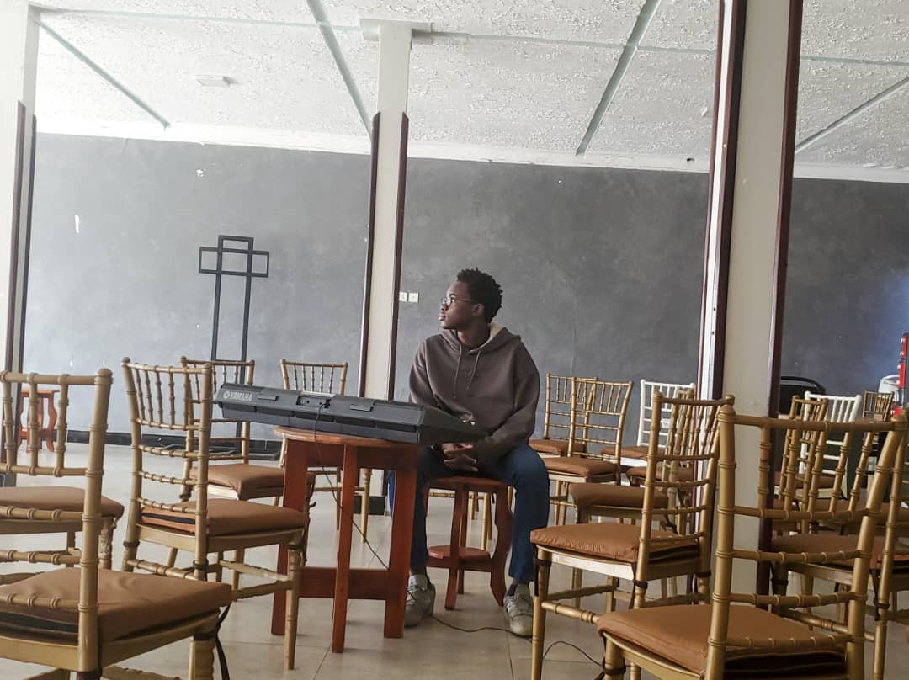

About emel0

emel0 is the evolving sound of Enock Mukisa Elijah Luwangwa, blending classical foundations with digital experimentation. Every track explores emotion, space, and the moments between notes.
Inspired by ambient, neo-classical, and electronic music, the project experiments with textures, rhythms, and atmospheres that convey intimacy and expansiveness simultaneously.
This is a space for reflection, curiosity, and growth — both for the listener and the artist. emel0’s journey is ongoing, and every release documents a new step in evolving sound.